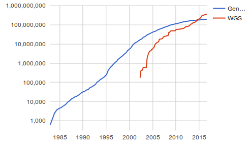
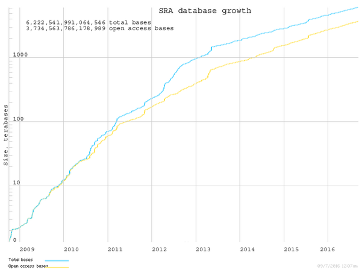
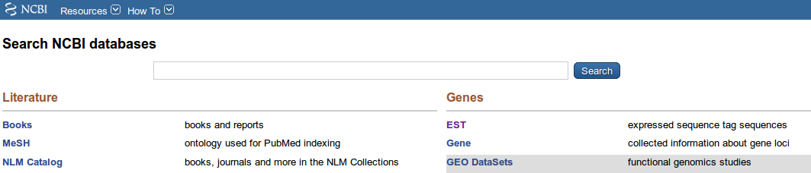

Biological Databases¶
Introduction¶
A database is an organized collection of data. For instance, a list with some of the movies that we like would be a movie database:
ID |
title |
year |
director |
|---|---|---|---|
movie1 |
The player |
1992 |
Robert Altman |
movie2 |
Cookie’s fortune |
1999 |
Robert Altman |
movie 3 |
The man who shot Liberty Valance |
1962 |
John Ford |
Vocabulary:
Entities: The kind of things that we want to store in a database. E.g.: Genes, DNA sequences, bibliographical references.
Records: The particular things stored in the database. E.g.: The gene BRCA1
Identifiers or key: The unique name that identifies a record
Fields: The properties that an entity has. E.g.: The name, sequence and mutations of the gene
In the previous movie examples the entities stored were movies, the records stored were: The player, Cookie’s fortune and The man who shot Liberty Valance. The unique idenfiers were: movie1, movie2 and movie3.
So if we think on the database as a table, the table would store information about one entity, the fields would be the column headers and the records would be the table rows.
It is quite common to store different entities in a database. For instance we could store movies, actors and directors or genes, sequences and mutations. In that case, the different entities could be stored in different tables and the records on those tables would be related by their unique identifiers. That structure would comprise a relational database.
The databases usually provide mechanisms to store, search, retrieve and modify the data.
Biological Databases¶
The data repositories more relevant to the biological sciences include:
nucleotide and protein sequences
protein structures
genomes
genetic expression
bibliography
Main sequence databases:
Main protein databases:
Some genome databases:
Bibliography:
Human diseases:
Metabolic pathways:
Sequence databases¶
A sequence database is a collection of DNA or protein sequences with some extra relevant information. The main sequence databases are Genbank and EMBL. Originally they were just sequence collections, but they have grown to store different biological databases heavily interconnected and they provide powerful interfaces to search and browse the stored information.
The sequences submitted to any of those databases are shared between them, so any sequence could be retrieved in the european or the american database. But they differ in the tools to search and browse the data and in some databases that provide extra information to the raw sequences like: mutations, coded proteins, bibliographical references, etc.
These databases are growing at an ever increasing fast pace. In June of 2007 there were 73 million sequences in Genbank and in August of 2015 there were 187 millions.
The sequences are split in these databases in different sections to ease the search. Among others, there are sections for mRNAs, publised nucleotide sequences, genomes, and genes.
Genbank¶
Genbank is a public collection of annotated sequences hosted by the NCBI. Among other kinds of sequences Genbank includes messenger RNAs, genomic DNAs and ribosomic RNA.
Some characteristics:
It is a public repository, any one can send sequences to it.
There are sequences of different qualities, anything submitted is stored.
There could be multiple sequences for the same gene or for the same mRNA
A sequence can have several versions that represent the modifications done by the authors.
Due to the huge amount of sequences stored to ease the search the databases are split in different divisions. These divisions follow two criteria: the species and type of sequence. Among the taxonomical divisions you can find: primate, rodent, other mammalian, invertebrate an others. The other divisions are related to the kind of sequences like: EST, WGS, HTGS, and many others. If you are looking for reads comming from the Next Generation Sequencing Technologies they are stored in a special division called SRA.
You can find more information about GenBank in its handbook.
RefSeq¶
RefSeq is a reference database curated by NCBI.
In RefSeq there are only well annotated and good quality sequences. It stores genomic, transcript and protein sequences and links the sequences that belong to a gene. It just has one representative sequence for each mRNA in a particular organism and, thus, it will have as many sequences as different transcripts and proteins coded for a particular gene in a particular organism.
It is not the aim of ReqSeq to have any sequence, but just to have a collection of well curated sequences. It is a secondary database. Since RefSeq requires extra curation work it is not available for all organisms, but only for those with good quality sequences. As of July of 2016 it has 65M proteins and 15M transcripts for 60K organisms.
UniProt¶
UniProt is a protein database that includes information divided in two sections: Swiss-Prot and TrEMBL. UniProt aims to store sequence and functional information for the proteins.
TrEMBL is automatically annotated while Swiss-Prot is reviewed manually by humans that add information by reviewing the literature. Due to this effort Swiss-Prot has information of a higher quality, but it has less sequences than TrEMBL.
UniProt also hosts Uniref. This database aims to store one representative sequence for each protein without taking into account the species of origin. It clusters all the similar proteins and picks one for every cluster as a representative. There are clusters created at 100%, 90% and 50% identities.
PubMed¶
PubMed is a bibliographical database that comprises biomedical literature (MEDLINE), life science journals and on-line books. It is a good collection of publications related to biochemistry, cellular biology and medicine. As of 2016 PubMed stores 26 million citations.
For each record it stores:
title
authors
abstract
There is a related database named PubMed Cental (PMC) that only includes citations of Free Access Journals. These citations include the complete text for the papers stored.
PDB, Protein Data Bank¶
PDB stores 3D structures for proteins and nucleic acids.
Access to the information in Genbank¶
Every database provides one or more methods to search and query the data. It is quite common to provide a web interface in which to do text searches with some keyword, author, ID or any other text. Genbank has a powerful query web interface.
Each database shows the results in one or several formats. For instance, the Genbank sequences can be obtained in several formats.
Genbank format:
LOCUS EC750390 558 bp mRNA linear EST 03-JUL-2006
DEFINITION POE00005652 PL(light) Polytomella parva cDNA similar to frataxin protein
-related, mRNA sequence.
ACCESSION EC750390
VERSION EC750390.1 GI:110064507
KEYWORDS EST.
SOURCE Polytomella parva
ORGANISM Polytomella parva
Eukaryota; Viridiplantae; Chlorophyta; Chlorophyceae;Chlamydomonadales;
Chlamydomonadaceae; Polytomella.
REFERENCE 1 (bases 1 to 558)
AUTHORS Lee,R.W. and Borza,T.
TITLE The colorless plastid of the green alga Polytomella parva: a repertoire of its functions
JOURNAL Unpublished (2006)
COMMENT Contact: TBestDB
Departement de Biochimie, Universite de Montreal
Montreal, Canada
Email: tbestdb-curator@bch.umontreal.ca
Plate: 4065.
FEATURES Location/Qualifiers
source 1..558
/organism="Polytomella parva"
/mol_type="mRNA"
/db_xref="taxon:51329"
/clone_lib="PL(light)"
ORIGIN
1 gcggccgctt tttttttttt tttttttttt ttttcgtccg ttatttcttt tttaagaatg
61 cagtcatctg tacatcgtca agtattcgga gtgttatctc gttttgtggg aaacaaagcg
121 ggtattttta caaagcataa tcatggtgtc tcaaggttgt cttcatgcac ttcgtcatgc
181 gtaaagatgt atactagcaa caaggccccc gaggatcttc aaacgttcca ccggcaagca
241 gacgaaactc tagagcaagt cactgaagcc cttgaaaact atgtagatga gcatgaagtg
301 gaaggcagcg acattgagca tacgcaagga gtgcttacta ttaagcttgg aactcttgga
361 agttatgtaa ttaataaaca gactcctaat aagcagatat ggttatcctc tcccgtcagt
421 ggacccttcc gatatgatct taaagaaggt gcctgggttt atgaacgggc tggcgaggct
481 cggcgcgagc ttatttctca attagaaaca gaaatttcgg atttagttgg tgtcgaatta
541 aagataagta actgaacg
EMBL format:
ID EC750390; SV 1; linear; mRNA; EST; PLN; 558 BP.
XX
AC EC750390;
XX
DT 04-JUL-2006 (Rel. 88, Created)
DT 04-JUL-2006 (Rel. 88, Last updated, Version 1)
XX
DE POE00005652 PL(light) Polytomella parva cDNA similar to frataxin
DE protein-related, mRNA sequence.
XX
KW EST.
XX
OS Polytomella parva
OC Eukaryota; Viridiplantae; Chlorophyta; Chlorophyceae; Chlamydomonadales;
OC Chlamydomonadaceae; Polytomella.
XX
RN [1]
RP 1-558
RA Lee R.W., Borza T.;
RT "The colorless plastid of the green alga Polytomella parva: a repertoire of
RT its functions";
RL Unpublished.
XX
DR UNILIB; 42732; 19932.
XX
CC Contact: TBestDB
CC Departement de Biochimie, Universite de Montrealhttp://es.wikipedia.org/wiki/Base_de_datos
CC Montreal, Canada
CC Email: tbestdb-curator@bch.umontreal.ca
CC Plate: 4065.
XX
FH Key Location/Qualifiers
FH
FT source 1..558
FT /organism="Polytomella parva"
FT /mol_type="mRNA"
FT /clone_lib="PL(light)"
FT /db_xref="taxon:51329"
FT /db_xref="UNILIB:42732"
XX
SQ Sequence 558 BP; 153 A; 105 C; 127 G; 173 T; 0 other;
gcggccgctt tttttttttt tttttttttt ttttcgtccg ttatttcttt tttaagaatg 60
cagtcatctg tacatcgtca agtattcgga gtgttatctc gttttgtggg aaacaaagcg 120
ggtattttta caaagcataa tcatggtgtc tcaaggttgt cttcatgcac ttcgtcatgc 180
gtaaagatgt atactagcaa caaggccccc gaggatcttc aaacgttcca ccggcaagca 240
gacgaaactc tagagcaagt cactgaagcc cttgaaaact atgtagatga gcatgaagtg 300
gaaggcagcg acattgagca tacgcaagga gtgcttacta ttaagcttgg aactcttgga 360
agttatgtaa ttaataaaca gactcctaat aagcagatat ggttatcctc tcccgtcagt 420
ggacccttcc gatatgatct taaagaaggt gcctgggttt atgaacgggc tggcgaggct 480
cggcgcgagc ttatttctca attagaaaca gaaatttcgg atttagttgg tgtcgaatta 540
aagataagta actgaacg 558
Main fields in the Genbank format.
Field |
Description |
Search in Entrez |
|---|---|---|
Locus name |
Unique sequence name |
[ACCN] |
Sequence length |
Sequence Length |
[SLEN] |
Molecule Type |
DNA, genomic, mRNA, etc. |
[PROP] |
Genbank Division |
Division for the sequence |
[PROP] |
Modification Date |
Date for the last edit |
[MDAT] |
Definition |
Brief description |
[TITL] |
Accession |
Unique accession ID. It does not changes with modifications |
[ACCN] |
Version |
Version number of the sequence |
All fields |
Keywords |
keywords that describe the sequence |
[KYWD] |
Source |
Common name for the source species |
[ORGN] |
Organism |
Oficial name for the source species |
[ORGN] |
Reference |
Related publications |
[TITL] [AUTH] [JOUR] |
Features |
Regions of interest |
[FKEY] |
CDS |
Coding Sequence |
[FKEY] |
The Accession is the unique identifier for a sequence record. An accession number applies to the complete record and is usually a combination of a letter(s) and numbers, such as a single letter followed by five digits (e.g., U12345) or two letters followed by six digits (e.g., AF123456).
The records in GenBank can be updated by an author request, accession numbers do not change, even if information in the record is changed. So, a sequence can have several versions in GenBank. Version is an unique identifier that represents a single, specific sequence in the GenBank database. If there is any change to the sequence data (even a single base), the version number will be increased, e.g., U12345.1 → U12345.2, but the accession portion will remain stable.
Features holds information about genes and gene products, as well as regions of biological significance reported in the sequence. These can include regions of the sequence that code for proteins and RNA molecules.
Features example:
FEATURES Location/Qualifiers
source 1..12401
/organism="Homo sapiens"
/mol_type="genomic DNA"
/db_xref="taxon:9606"
/chromosome="17"
/map="17q24.3"
gene complement(<1..4774)
/gene="SOX9-AS1"
/note="SOX9 antisense RNA 1"
/db_xref="GeneID:400618"
/db_xref="HGNC:HGNC:49321"
ncRNA complement(<4744..4774)
/ncRNA_class="lncRNA"
/gene="SOX9-AS1"
/product="SOX9 antisense RNA 1, transcript variant 2"
/inference="similar to RNA sequence (same
species):RefSeq:NR_103737.1"
/exception="annotated by transcript or proteomic data"
/transcript_id="NR_103737.1"
/db_xref="GeneID:400618"
/db_xref="HGNC:HGNC:49321"
gene 5001..10401
/gene="SOX9"
/gene_synonym="CMD1; CMPD1; SRA1; SRXX2; SRXY10"
/note="SRY-box 9"
/db_xref="GeneID:6662"
/db_xref="HGNC:HGNC:11204"
/db_xref="MIM:608160"
mRNA join(5001..5803,6700..6953,7524..10401)
/gene="SOX9"
/gene_synonym="CMD1; CMPD1; SRA1; SRXX2; SRXY10"
/product="SRY-box 9"
/transcript_id="NM_000346.3"
/db_xref="GeneID:6662"
/db_xref="HGNC:HGNC:11204"
/db_xref="MIM:608160"
exon 5001..5803
/gene="SOX9"
/gene_synonym="CMD1; CMPD1; SRA1; SRXX2; SRXY10"
/inference="alignment:Splign:2.1.0"
/number=1
CDS join(5373..5803,6700..6953,7524..8368)
/gene="SOX9"
/gene_synonym="CMD1; CMPD1; SRA1; SRXX2; SRXY10"
/note="SRY (sex-determining region Y)-box 9 protein;
SRY-related HMG-box, gene 9; SRY (sex determining region
Y)-box9"
/codon_start=1
/product="transcription factor SOX-9"
/protein_id="NP_000337.1"
/db_xref="CCDS:CCDS11689.1"
/db_xref="GeneID:6662"
/db_xref="HGNC:HGNC:11204"
/db_xref="MIM:608160"
/translation="MNLLDPFMKMTDEQEKGLSGAPSPTMSEDSAGSPCPSGSGSDTE
NTRPQENTFPKGEPDLKKESEEDKFPVCIREAVSQVLKGYDWTLVPMPVRVNGSSKNK
PHVKRPMNAFMVWAQAARRKLADQYPHLHNAELSKTLGKLWRLLNESEKRPFVEEAER
LRVQHKKDHPDYKYQPRRRKSVKNGQAEAEEATEQTHISPNAIFKALQADSPHSSSGM
SEVHSPGEHSGQSQGPPTPPTTPKTDVQPGKADLKREGRPLPEGGRQPPIDFRDVDIG
ELSSDVISNIETFDVNEFDQYLPPNGHPGVPATHGQVTYTGSYGISSTAATPASAGHV
WMSKQQAPPPPPQQPPQAPPAPQAPPQPQAAPPQQPAAPPQQPQAHTLTTLSSEPGQS
QRTHIKTEQLSPSHYSEQQQHSPQQIAYSPFNLPHYSPSYPPITRSQYDYTDHQNSSS
YYSHAAGQGTGLYSTFTYMNPAQRPMYTPIADTSGVPSIPQTHSPQHWEQPVYTQLTR
P"
STS 5374..5670
/gene="SOX9"
/gene_synonym="CMD1; CMPD1; SRA1; SRXX2; SRXY10"
/standard_name="PMC34415P1"
/db_xref="UniSTS:273201"
exon 6700..6953
/gene="SOX9"
/gene_synonym="CMD1; CMPD1; SRA1; SRXX2; SRXY10"
/inference="alignment:Splign:2.1.0"
/number=2
STS 6765..7647
/gene="SOX9"
/gene_synonym="CMD1; CMPD1; SRA1; SRXX2; SRXY10"
/standard_name="PMC351321P1"
/db_xref="UniSTS:273242"
STS 6771..7605
/gene="SOX9"
/gene_synonym="CMD1; CMPD1; SRA1; SRXX2; SRXY10"
/standard_name="MARC_71570-71571:1249593890:3"
/db_xref="UniSTS:528379"
STS 6876..8104
/gene="SOX9"
/gene_synonym="CMD1; CMPD1; SRA1; SRXX2; SRXY10"
/standard_name="Sox9"
/db_xref="UniSTS:502689"
exon 7524..10401
/gene="SOX9"
/gene_synonym="CMD1; CMPD1; SRA1; SRXX2; SRXY10"
/inference="alignment:Splign:2.1.0"
/number=3
Sequence formats¶
Text files¶
There are different formats to store sequences in a text file. Text files should only include Plain text. Graphics or any other binary information are not allowed in text files.
Microsoft Word files are not text files, they are binary files that happen to represent documents. These documents can include text among many other things like images, charts or formats.
Sequences in plain files¶
We could store the sequence in a text file by just writing the sequence. This files would had to include only IUPAC characters.
ACAAGATGCCATTGTCCCCCGGCCTCCTGCTGCTGCTGCTCTCCGGGGCCACGGCCACCGCTGCCCTGCCCCTGGAGGGTAC
GGCCCCACCGGCCGAGACAGCGAGCATATGCAGGAAGCGGCAGGAATAAGGAAAAGCAGCCTCCTGACTTTCCTCGCTTGGT
AGTGGACCTCCCAGGCCAGTGCCGGGCCCCTCATAGGAGAGGAAGCTCGGGAGGTGGCCAGGCGGCAGGAAGGCGCACCCCC
ATCCGCGCGCCGGGACAGAATGCCCTGCAGGAACTTCTTCTGGAAGACCTTCTCCTCCTGCAAATAAAA
This kind of file is seldom used because it lacks any metadata to identify the sequence.
Fasta format¶
The Fasta file includes a name for the sequence and, optionally, some description. The sequence should be preceded by a line that starts with the symbol >. The name will be written after that symbol. Spaces are not allowed in the sequence name. If there is a description it will be found after a space in the same line.
Several sequences can be included in the same file.
It is one of the most common formats.
>sequence1_name description
ACAAGATGCCATTGTCCCCCGGCCTCCTGCTGCTGCTGCTCTCCGGGGCCACGGCCACCGCTGCCCTGCC
CCTGGAGGGTGGCCCCACCGGCCGAGACAGCGAGCATATGCAGGAAGCGGCAGGAATAAGGAAAAGCAGC
CTCCTGACTTTCCTCGCTTGGTGGTTTGAGTGGACCTCCCAGGCCAGTGCCGGGCCCCTCATAGGAGAGG
AAGCTCGGGAGGTGGCCAGGCGGCAGGAAGGCGCACCCCCCCAGCAATCCGCGCGCCGGGACAGAATGCC
CTGCAGGAACTTCTTCTGGAAGACCTTCTCCTCCTGCAAATAAAACCTCACCCATGAATGCTCACGC
>sequence2_name description
ACAAGATGCCATTGTCCCCCGGCCTCCTGCTGCTGCTGCTCTCCGGGGCCACGGCCACCGCTGCCCTGCC
CCTGGAGGGTGGCCCCACCGGCCGAGACAGCGAGCATATGCAGGAAGCGGCAGGA
If we want to include more information we could use the GenBank or EMBL formats. It is also very common in the sequences that come directly from a sequencing machine to include the quality information, for that purpose the most common format is FASTQ.
Ontologies¶
Wikipedia defines ontology as:
an ontology is a formal naming and definition of the types, properties, and interrelationships of the entities that really or fundamentally exist for a particular domain of discourse.
An ontology is a way of structure the knowledge by dividing it in the entities relevant to a particular field. For instance, we have been talking about sequences, so a term in our ontology could be sequence.
It is also quite common to create hierarchical ontologies. For instance, nucleotide sequence and protein sequence could be subterms of sequence. In an ontology the terms are precisely defined and, usually, there are no synonyms.
Defining the terms relevant to a field is very useful, specially if those terms are discussed and adopted by the whole community. Standard ontologies became powerful tools that enable automatic analyses and searches. Imagine that we want to look for all enzymes related to lipid metabolism in a database. Which term should we use for the search? Lipid metabolism? Fat degradation? Lipid catabolism?
There are different biological ontologies, but the main ones are maintained by the Gene Ontology Consortium. The GO terms are used to define gene functions. Each GO term has an unique ID and a definition. There are three aspects covered by three hierarchical ontologies:
molecular function: molecular activities of gene products
cellular component: where gene products are active
biological process: pathways and larger processes made up of the activities of multiple gene products.
{kind=link}
You can browse the GO hierarchies at a GO browser
A gene can have several GO terms associated with each ontology. A gene can be annotated with terms from different levels of the hierarchy.
The GO ontologies ease the search for information and allow complex automated analyses.